星球：南半球聊财经 · 星主：Jason 不跪 当天发帖数量：9 帖（时间跨度 13:24 – 14:41，美西时间） 抓取方式：已登录网页版原图 + 逐帖转写；价格/数据仅作背景说明，非投资建议。
今日要点速览
今天 Jason 一口气发了 9 条，主线其实很清楚，可以串成三条大逻辑：
- "资源权力"正在从石油转向别的东西。 一篇 NBER 新论文（帖1）提出中国靠关键矿产供应链拿到了类似当年产油国的"定价权"；美国战略石油储备则跌到 1983 年以来最低（帖4）——一进一退，传统能源霸权和新的矿产霸权在同框对比。
- 全球财富在"纸面上"暴涨，但结构很畸形。 麦肯锡说 2025 年全球家庭财富冲到 570 万亿美元创纪录（帖6），但增长主要来自股票估值而非实体房产；中国是高储蓄"超级大国"却面临 M2 远超 GDP、企业高杠杆的问题（帖7）。黄金在这种环境里成了高盛客户"押注命中率最高"的品种（帖2）。
- 地缘与产业链在重新洗牌。 中东红海航运受阻、油价逼近 100 美元（帖8）；中国电动车在泰国五年内从"查无此车"干到近 30% 市场份额（帖9）；美国国内低收入群体的实际收入靠减税小幅改善（帖3）；韩国出生人口回升主因被拆解（帖5）。
一句话总结今天的情绪：旧秩序（石油美元）在松动，新秩序（矿产、供应链、纸面财富）在成形，而黄金和地缘风险是这个过渡期的关键词。
帖 1 · NBER 论文：中国的"元素周期表特权"
时间：2026-07-25 14:41 ｜ 标签：#论文或书籍推荐
帖子原文
NBER：绿色转型并没有让世界摆脱能源地缘政治，而只是把战略依赖从"石油天然气"转移到了"关键矿产供应链"；而中国通过主动构建供应链中心地位，获得了类似石油时代产油国的定价权。美元的特权来自全球金融体系的中心节点，中国是不是正在获得一种元素周期表的嚣张特权?
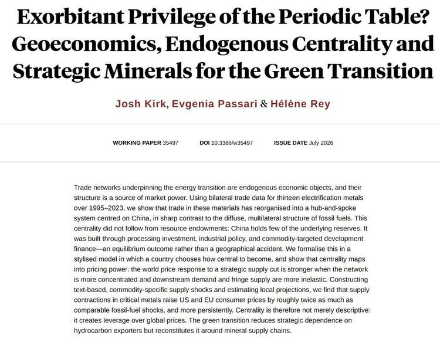
一句话核心
绿色转型没消灭"能源地缘政治"，只是把它从石油换成了锂、钴、稀土这些关键金属——而中国站在了这张供应链网络的中心。
背景与关键数据
图片是这篇论文的封面与摘要：NBER 工作论文第 35497 号，2026 年 7 月发布，作者是 Josh Kirk、Evgenia Passari 和 Hélène Rey（Rey 是研究"美元特权"的顶级国际金融学者，分量很重）。
标题玩了个双关——"Exorbitant Privilege of the Periodic Table"（元素周期表的过度特权）。"Exorbitant Privilege（过度特权）"这个词原本专指美元：因为全世界都用美元结算、储备，美国能以极低成本借钱、印钞买全球商品，这是别国没有的"特权"。作者把这个概念搬到了金属上。
摘要里的硬数据：论文用了 1995–2023 年 13 种电气化金属的双边贸易数据，发现这些材料的贸易已经重组成一个以中国为枢纽的"轮辐结构"（hub-and-spoke），和石油那种分散的多边结构完全不同。关键一句：这种中心地位不是因为中国资源多（"China holds few of the underlying reserves" —— 中国其实没多少矿藏储量），而是靠加工投资、产业政策和定向的商品开发性金融"建"出来的。论文估算，关键金属的供给收缩推高美欧消费者价格的幅度，大约是同等规模石油冲击的两倍，而且更持久。
图片解读
这张是纯文字的论文摘要页，没有图表。要看的重点在于三处：作者阵容（Rey）、标题的双关（把美元特权类比到矿产），以及方法论——用真实贸易数据 + 局部投影模型量化"卡脖子"的价格冲击。它本质是一篇把"资源武器化"讲成严谨经济学模型的论文。
为什么重要 / 对市场和经济的含义
如果论文的结论成立，意味着：谁控制了关键矿产的加工与供应链中枢，谁就有了类似 OPEC 当年对油价、甚至类似美国对美元的议价能力。对市场的含义是——稀土/锂/钴等关键金属的供给端是一个长期的地缘定价变量，一旦中国用出口管制这张牌，传导到终端商品价格的力度可能被市场低估。Jason 抛出的问题"中国是不是正在获得元素周期表的嚣张特权"，其实是在提示：新能源时代的"卡脖子"风险，本质是旧的能源地缘政治换了个化学元素而已。
延伸知识
- 什么是"过度特权 / Exorbitant Privilege"：这个词最早是 1960 年代法国财长（后来的总统）德斯坦抱怨美国的。因为美元是全球储备货币，美国可以长期贸易逆差却不用担心还不起债——相当于全世界借钱给它花。理解这个概念，就能理解为什么"矿产版特权"是个很有冲击力的类比。
- "轮辐结构"vs"多边结构"：想象机场。石油像很多城市之间互相直飞（多边、分散，谁都能替代谁）；关键矿产像所有航班都必须先飞到北京中转（轮辐，中枢一停摆全网瘫痪）。中枢化程度越高，中心国的议价权越大——这正是论文的核心机制。
帖 2 · CNBC/高盛：黄金是客户"押得最准"的品种
时间：2026-07-25 14:05 ｜ 标签：#金融
帖子原文
CNBC：过去十年高盛客户对黄金不仅长期偏多，而且这种偏多判断的命中率也明显高于其他资产。利率和大宗商品则更像抛硬币。
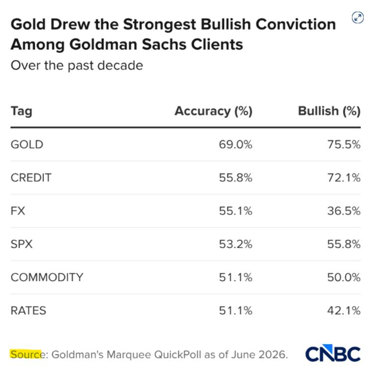
一句话核心
过去十年，高盛客户在黄金上"既敢押多、又押得准"，而在利率、汇率上的判断基本靠运气。
背景与关键数据
图片是 CNBC 根据**高盛 Marquee QuickPoll（客户情绪调查，数据截至 2026 年 6 月）**做的一张表。两列指标：
| 品类 | 判断命中率(Accuracy) | 看多比例(Bullish) |
|---|---|---|
| 黄金 GOLD | 69.0% | 75.5% |
| 信用债 CREDIT | 55.8% | 72.1% |
| 汇率 FX | 55.1% | 36.5% |
| 美股 SPX | 53.2% | 55.8% |
| 大宗商品 COMMODITY | 51.1% | 50.0% |
| 利率 RATES | 51.1% | 42.1% |
怎么读："命中率"是客户方向性判断对了的比例；50% 就等于抛硬币。黄金 69% 明显高出一档，且看多比例高达 75.5%——说明客户对黄金又看多又常常对。相比之下利率、大宗商品的命中率贴着 51%，基本是随机。
图片解读
这是一张排序表，按"命中率"从高到低排。视觉重点是黄金那一行两个数字都最高（69%、75.5%），和下面一堆 50% 出头的形成鲜明对比。它传达的信号：在这轮周期里，黄金是"聪明钱"最有把握的方向。
为什么重要 / 对市场和经济的含义
这条和帖1、帖4、帖6、帖7其实是一条暗线：在"石油霸权松动 + 全球纸面财富膨胀 + 中国 M2 超发"的宏观背景下，黄金作为不依赖任何主权信用的硬通货，自然成为对冲工具。高盛客户"押金最准"某种程度上反映了这个时代的共识——当纸面资产和主权货币的信任被质疑时，黄金是最省心的避风港。要注意的是，这是"过去十年回看"的统计，不代表未来必然延续。
延伸知识
- 为什么利率/汇率最难判断：利率和汇率是两个"零和博弈"最激烈、又最受央行政策扰动的市场，信息高度有效，任何人（包括机构客户）想持续赢过市场都极难，命中率贴着 50% 很正常。这也是"有效市场假说"在现实里的一个侧写。
- 看多比例 ≠ 命中率：注意汇率那行——看多只有 36.5%（即客户大多看空美元或某货币），但命中率 55%。两个指标要分开看：一个是"仓位往哪偏"，一个是"最后对没对"。
帖 3 · BofA：美国低收入者支出更猛，减税是隐形推手
时间：2026-07-25 14:02 ｜ 标签：#其他国家经济
帖子原文
BOFA：美国低收入者支出增长速度快于高收入者的趋势是否会持续到下半年，还有待观察。一种可能是依赖于大美丽法案，一些中低收入家庭今年减少了税收预扣，从而提高了他们的实际收入。
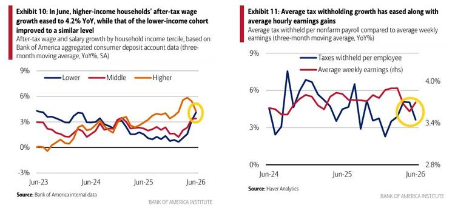
一句话核心
美国低收入家庭今年花钱比高收入的还猛，一个可能的原因是"少预扣了税"，到手工资变多了。
背景与关键数据
图片是美国银行研究院（Bank of America Institute）的两张图，用的是 BofA 自己的银行账户聚合数据（比官方统计更即时）。
- Exhibit 10：按收入三档（低 Lower / 中 Middle / 高 Higher）分的税后工资增速（同比 %），从 2023 年 6 月到 2026 年 6 月。到 2026 年 6 月，高收入组增速回落到 4.2%，低收入组则回升到差不多的水平——三档收敛。图里黄圈标出了末端高收入组的回落。
- Exhibit 11：人均税收预扣的增速（蓝）对比平均周薪增速（红），两者都在 3.4%–4% 附近，且预扣增速在往下走。
图片解读
左图看"谁花钱的底气在变强"——低收入组的工资增速追上了高收入组，这在消费上意味着中低端消费更有支撑。右图是关键佐证："税收预扣"增速在放缓（蓝线末端下行到黄圈处）。预扣少了，等于每月到手现金变多，实际可支配收入上升——这解释了为什么低收入者敢多花。
为什么重要 / 对市场和经济的含义
消费占美国 GDP 约七成，低收入群体的边际消费倾向最高（多一块钱基本会花掉），所以他们的收入变化对总需求影响很直接。如果"大美丽法案"（One Big Beautiful Bill，特朗普政府的减税法案）通过降低预扣、提高到手收入来撑住中低端消费，那下半年的消费韧性可能比市场担心的更强——利好零售、必需消费板块。但 Jason 也留了个问号："能不能持续到下半年还得看"——因为这是一次性的现金流改善，不是工资本身的可持续上涨。
延伸知识
- 什么是"税收预扣"（tax withholding）：美国雇主每次发工资时会先替你扣一部分预缴给税务局，年底报税时多退少补。预扣调低，当下每月到手就变多（但可能明年退税变少或要补税）。所以"预扣下降"更像把未来的钱挪到现在花，是现金流的时间平移，未必是真实财富增加。
- 为什么盯"低收入 vs 高收入"分层：因为总量数据会掩盖结构。总消费看着稳，但可能是低收入撑着、高收入在收缩，或反过来。分层能看清"这轮消费到底谁在扛"，对判断经济韧性质量很重要。
帖 4 · 美国战略石油储备跌至 1983 年以来最低
时间：2026-07-25 13:55 ｜ 标签：#金融
帖子原文
charlie：美国战略石油储备现已降至自1983年3月以来的最低水平。过去五年我们见证了3.1亿桶的减少，下降了50%。
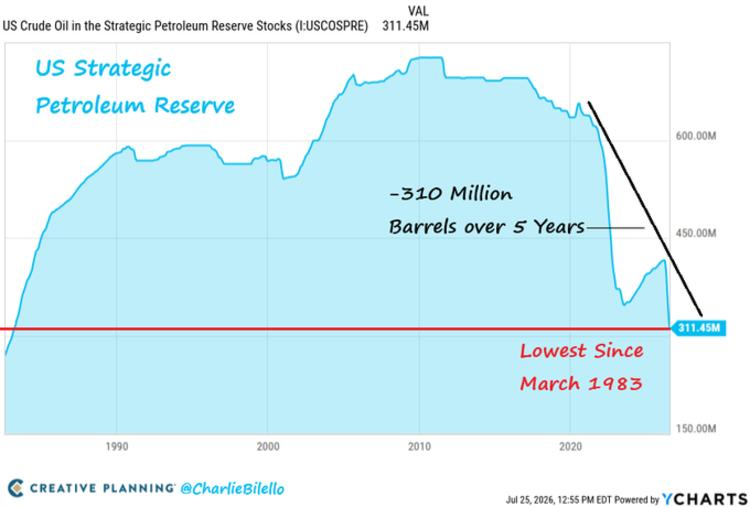
一句话核心
美国的"石油应急水库"被抽干了一半，只剩 3.11 亿桶，是 40 多年来最低。
背景与关键数据
图片是知名数据博主 Charlie Bilello（Creative Planning）的图，数据源 YCharts，截至 2026 年 7 月 25 日。美国战略石油储备（SPR）当前值 311.45 百万桶（3.11 亿桶）。图上标注：过去 5 年减少了 3.1 亿桶（-50%），是 1983 年 3 月以来最低。曲线显示 SPR 在 2010 年前后见顶（约 7 亿桶），2022 年起断崖式下跌至今。
图片解读
横轴是年份（1990 到 2020+），纵轴是储备桶数（150M 到 600M+）。红色水平线标出当前的 311.45M，穿过图形下半部分——直观说明现在的水位比过去 30 多年任何时候都低。黑色斜线标注了 2022 年之后那段"-3.1 亿桶"的陡降。
为什么重要 / 对市场和经济的含义
SPR 是美国用来应对石油供应中断（战争、飓风、禁运）的国家级缓冲池。2022 年为压制油价（俄乌冲突后通胀高企），拜登政府大规模释放 SPR，把水位打下来了一半。现在库存这么低意味着：万一再出现供应冲击（比如帖8说的红海/霍尔木兹危机），美国用来平抑油价的"弹药"已经不多了。结合帖8油价逼近 100 美元的背景，SPR 见底会放大油价对地缘事件的敏感性——这是能源市场一个重要的结构性隐患。
延伸知识
- 战略石油储备（SPR）是什么：美国在墨西哥湾沿岸的地下盐穴里储存的国家石油应急库，1975 年石油危机后建立，设计容量约 7 亿桶。它不是用来"赚钱"的，而是应急和政策工具。低价时买、高价时抛，理论上还能平抑价格。
- 释放 SPR 的"双刃剑"：短期能压油价、缓解通胀（政治上讨好选民），但透支了应急能力，且未来还得回补（回补时又会推高需求）。所以 SPR 见底往往被解读为**"政策空间被用尽"**的信号。
帖 5 · 何亚福：韩国出生人口回升，真正主因是什么
时间：2026-07-25 13:54 ｜ 标签：#其他国家经济
帖子原文
何亚福：非婚生育与外娶，仅是韩国近年出生人口回升的两个次要原因，而不是主要原因。
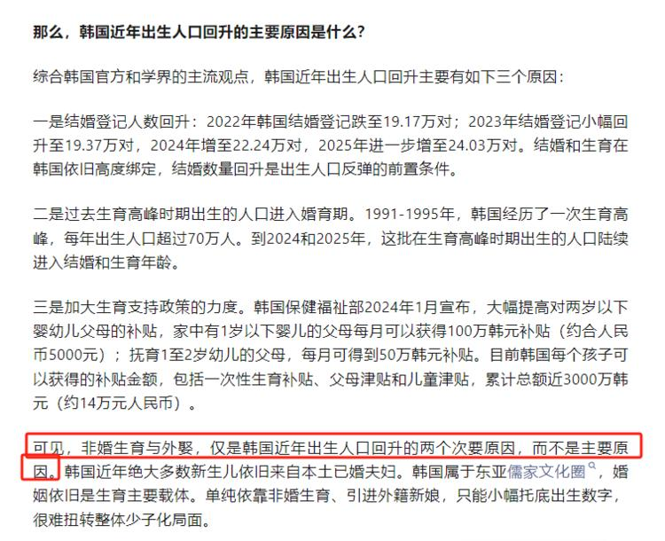
一句话核心
韩国这两年出生人口回升，主因不是"非婚生育"或"娶外国新娘"，而是结婚数回升、婚育高峰人口进入育龄、以及加码的生育补贴。
背景与关键数据
图片是人口学者何亚福的分析文字，列了三条主因：
- 结婚登记回升：2022 年跌到 19.17 万对 → 2023 年 19.37 万 → 2024 年 22.24 万 → 2025 年进一步升到 24.03 万对。韩国"结婚"和"生育"高度绑定，结婚数回升是出生反弹的前提。
- 婚育高峰人口进入育龄：1991–1995 年韩国有一波生育高峰（每年出生超 70 万人），这批人到 2024–2025 年正好陆续进入结婚生育年龄。
- 加码生育补贴：韩国保健福祉部 2024 年 1 月起大幅提高补贴，1 岁以下婴儿父母每月可领 100 万韩元（约 5000 元人民币），累计每个孩子的补贴总额近 3000 万韩元（约 14 万人民币）。
结论（红框标出）：非婚生育、引进外籍新娘只能小幅托底，很难扭转整体少子化。
图片解读
这是一张纯文字截图，重点是那组结婚登记数据的逐年爬升（19.17→24.03 万对）和补贴金额（累计近 3000 万韩元/孩）。红框圈出的结论句是文章的落脚点：别把次要原因当主因。
为什么重要 / 对市场和经济的含义
韩国是全球生育率最低的国家之一（一度跌破 0.8），它的少子化"实验"对同样面临人口危机的东亚（中国、日本）有直接参考价值。这条的启示是：发钱补贴 + 人口结构的"回声"（婚育高峰的后代）能带来短期回升，但结构性的少子化趋势很难靠补贴逆转。对宏观的长期含义——人口是消费、房地产、养老金体系的底层变量，东亚人口拐点会持续压制这些经济体的长期增长潜力。
延伸知识
- 什么是"人口回声效应（echo）"：一波婴儿潮长大后进入育龄，会带来一个较小的"次生婴儿潮"，像回声一样。韩国 1991–95 高峰的后代现在生育，就是典型的回声——但这是一次性的、会随时间衰减的因素，不能持续。
- 生育率 vs 出生人口：注意区分。出生人口回升可能只是"育龄人口变多"（分母大了），而每个女性平均生几个（生育率/TFR）可能还在跌。看人口趋势要盯生育率，而不是被绝对出生数的短期反弹迷惑。
帖 6 · 麦肯锡：2025 全球家庭财富创纪录 570 万亿美元
时间：2026-07-25 13:48 ｜ 标签：#金融
帖子原文
麦肯锡：截至2025年，全球家庭财富总额创纪录地达到570万亿美元，比2024年增长了40万亿美元。美国依然占据最大份额，达到30%。欧元区和中国分别占据14%和13%的份额。……美国股市高估值依赖于企业盈利长期持续超过GDP。美国是唯一显示出生产力加速迹象的主要经济体。
从资产类别的角度来看，去年财富驱动因素发生了显著转变。……全球新增家庭财富中有57%来自股票，只有15%来自房地产。……中国财富增长跌幅最大。转向国内消费可能是实现可持续增长和摆脱长期停滞的唯一途径。要弥补家庭房地产投资下降，国内需求必须增长超过GDP的6个百分点。
（原文较长，以上为节选；完整正文见星球原帖）
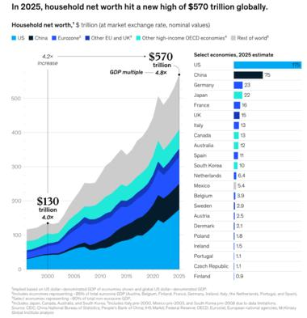
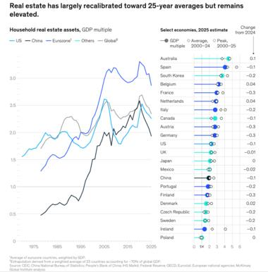
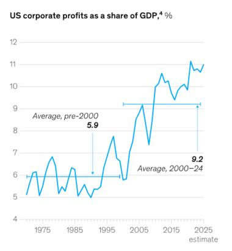
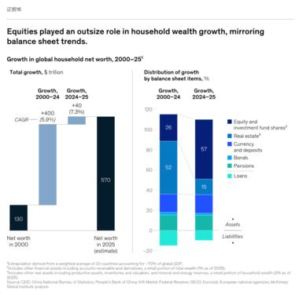
一句话核心
2025 年全球家庭财富冲到 570 万亿美元的历史新高，但这一年的增长几乎全靠"股票涨价"这种纸面财富，房地产反而在多国下跌——这是一个和过去 25 年完全不同的信号。
背景与关键数据
麦肯锡全球研究院（McKinsey Global Institute）的报告。核心数字：
- 全球家庭净资产 570 万亿美元（2025），比 2024 年增 40 万亿。相对 GDP 的倍数 4.8 倍（2000 年是 4.0 倍）。
- 份额：美国 30%、欧元区 14%、中国 13%。
- 2025 年新增财富中 57% 来自股票，仅 15% 来自房地产——而 2000 年以来的平均，房地产曾贡献超一半。
- 美国企业利润占 GDP 比重约 11%（2025 估），是 2000 年前平均值 5.9% 的近两倍。
- 中国企业债务达 GDP 的 1.7 倍（重点经济体中最高）。
图片解读
- 图1（post6_img1）：全球家庭净资产的堆叠面积图，从 2000 年约 130 万亿（4.0 倍 GDP）涨到 2025 年 570 万亿（4.8 倍），25 年增了约 4.2 倍。右侧条形是各国 2025 年净资产（万亿美元）：美国遥遥领先（约 170），中国约 75，德国 23，日本 22……直观展示美国一家独大。
- 图2（post6_img2）：各国家庭房地产资产（相对 GDP 的倍数）。标题说房地产"已大体回落到 25 年均值附近，但仍偏高"。多数经济体的房产估值在向长期均值收敛，中国、德国等出现下跌。
- 图3（post6_img3）：美国企业利润占 GDP 比重。2000 年前平均 5.9%，2000–24 平均升到 9.2%，2025 年已到 约 11%——利润份额翻倍。这是美股高估值的根基。
- 图4（post6_img4）：财富增长的资产结构对比。左边柱子拆解 2000→2025 总增长（130→570 万亿，中间 +400 是 2000–24、+40 是 2024–25）；右边对比两个时期的增长来源：2000–24 房地产占 52%、股票 26%；2024–25 反过来，股票占 57%、房地产仅 15%。
为什么重要 / 对市场和经济的含义
这份报告点破了一个关键风险：2025 年的"财富创纪录"是"纸面财富"驱动的——名义资产价格上涨，和实体经济脱钩。麦肯锡自己的话说是"名义资产价值增长与实体经济脱钩"。含义有两层：
- 对美国：股市高估值全押在"企业利润能长期跑赢 GDP"这个假设上。历史上利润率有均值回归的引力，一旦利润份额回落，高估值就失去支撑——这是美股最大的结构性风险点。美国是唯一有生产率加速迹象的大经济体，这是它的护城河，但也是"赌注"。
- 对中国：财富增长跌幅最大（因为房地产是中国家庭财富的大头，房价跌直接缩水）。麦肯锡开的药方是"转向国内消费"，且要让内需增速超过 GDP 六个百分点才能填补房地产投资下降的缺口——这是个极高的门槛，点出了中国经济转型的核心难题。
延伸知识
- "纸面财富 vs 真实财富"：如果你的房子/股票涨价，账面身家变多了，但这只是"估值"变了，没有新增任何实物产出。当所有人都想把纸面财富变现（卖股卖房换钱花）时，价格就会跌——纸面财富有"人人有、人人变不了现"的合成谬误。这也是为什么麦肯锡强调"与实体经济脱钩"是个警讯。
- 企业利润占 GDP 的均值回归：经济学里有个经典判断（Jeremy Grantham 常引用）——"企业利润率是所有金融序列里均值回归最强的指标之一"。因为高利润会吸引竞争、招致监管或工资上涨，把利润拉回来。美国利润份额翻倍到 11%，是支撑美股的关键，也是最需要警惕反转的变量。
帖 7 · TKL：中国是储蓄"超级大国"，收紧外流是"连攻带守"
时间：2026-07-25 13:34 ｜ 标签：#金融
帖子原文
TKL：中国的高储蓄率对于系统来说，是一种"资源"，收紧外流是为了"保护"这种资源控制能力，连攻带守。
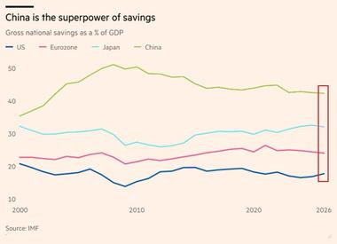
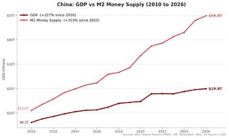
一句话核心
中国超高的国民储蓄是金融体系可支配的"弹药库"，管住资本外流，就是把这份弹药牢牢攥在自己手里——既是防守也是进攻。
背景与关键数据
两张图：
- 图1（post7_img1）："China is the superpower of savings"——国民总储蓄占 GDP 比重。中国（绿线）长期在 43%–45% 附近，遥遥领先日本（约 30%）、欧元区（约 24%）、美国（约 18%）。2026 年末用红框标出中国仍居高位。数据源 IMF。
- 图2（post7_img2）：中国 GDP vs M2 货币供应量（2010–2026）。GDP 自 2010 年 +227% 到 19.9 万亿美元；M2 则 +353%，从 11.07 万亿飙到 49.8 万亿美元。M2 增速远超 GDP。
图片解读
图1的重点是那条一骑绝尘的绿线——中国储蓄率是发达经济体的两倍上下，说明中国家庭和企业"存的多、花的少"。图2的重点是两条线的剪刀差：红色 M2 (货币总量) 越涨越陡，蓝色 GDP 相对平缓——意味着印出来的钱远多于经济实际产出的增长，大量货币沉淀在储蓄和资产里，而非转化为消费或有效产出。
为什么重要 / 对市场和经济的含义
把两张图连起来看，就懂 TKL 说的"连攻带守"：
- 高储蓄 + M2 超发，意味着中国体系内趴着巨量的人民币存款。这既是可以调动去搞投资、放贷、稳增长的"资源"，也是一旦失控外流就会冲击汇率、掏空银行体系的"风险"。
- 所以收紧资本外流管制，本质是把这份储蓄"锁"在境内：防守上避免资金外逃引发汇率和金融动荡；进攻上保留了用这些钱去支持产业政策（比如帖1的矿产供应链、帖9的电动车出海）的能力。
- 对市场的含义：这解释了中国为何对资本账户开放极其谨慎，也是人民币国际化"想推又不敢全放"的根本矛盾——开放资本账户 = 放弃对这份储蓄的绝对控制权。
延伸知识
- 什么是 M2：广义货币供应量，约等于"流通中的现金 + 所有活期和定期存款"。M2 增速远超 GDP，通常说明货币在"空转"或沉淀在资产里，没有充分推动实体增长——容易催生资产泡沫，也是"钱多但通胀不高"这种中国式现象的背景。
- "不可能三角"：一国无法同时拥有①独立货币政策、②固定汇率、③资本自由流动，最多三选二。中国选择了独立货币政策 + 相对稳定汇率，代价就是放弃资本自由流动（保留管制）。TKL 说的"收紧外流"正是这个三角的必然选择。
帖 8 · zerohedge：特朗普暂停伊朗轰炸，红海战线升温
时间：2026-07-25 13:29 ｜ 标签：#其他国家经济
帖子原文
zerohedge：特朗普暂停进攻，阿曼代表团斡旋似乎有所进展。机构分析美国此轮开支应该超过千亿美元，不止五角大楼所说的300多亿。
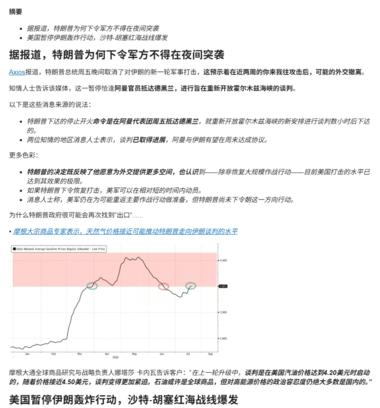
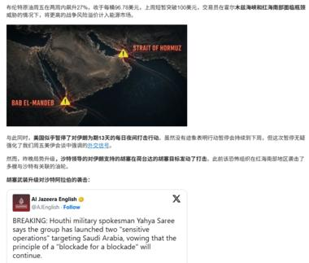
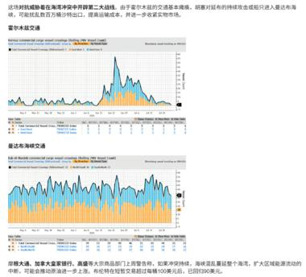
一句话核心
美国暂停对伊朗的军事行动、阿曼出面斡旋，但胡塞武装在红海继续找事，油价逼近 100 美元，且这轮军事开支可能远超官方口径。
背景与关键数据
三张图拼出一个中东地缘 + 能源市场的画面：
- 图1（post8_img1）：中文财经资讯截图，标题"美国暂停伊朗轰炸行动，沙特-胡塞红海战线爆发"。据 Axios 报道，特朗普下令军方不得在夜间突袭，阿曼代表团斡旋有进展。内嵌一张摩根大通天然气价格图，提到美国天然气价格约 4.20 美元/百万英热单位。
- 图2（post8_img2）：中东地图，高亮**霍尔木兹海峡（Strait of Hormuz）和曼德海峡（Bab el-Mandeb）**两大能源咽喉。配一条半岛电视台推文：胡塞军事发言人 Yahya Saree 宣称对沙特发动两次"敏感行动"，坚持"以封锁对封锁"。文中提到布伦特油价 96.78 美元/桶，若持续可能突破 100。
- 图3（post8_img3）：两张航运图，分别是霍尔木兹海峡和曼德海峡的商业船只通行量（14 周滚动），显示过境船只数量在下滑。文字提到摩根大通、高盛、摩根士丹利预测布伦特短期可能冲 100 美元，当前约 90。
图片解读
- 地图（图2）的作用是让你直观理解风险点：全球很大比例的石油要经过这两个只有几十公里宽的海峡，一旦被封锁或袭击，油轮绕行=运费飙升+供应担忧=油价跳涨。
- 航运量图（图3）是"用数据验证担忧"——过境船只在减少，说明航运公司已经在主动规避这两个危险水道，实质性地收紧了石油海运通道。
- 天然气价格图（图1）和油价数字共同指向：地缘冲突正在向能源价格传导。
为什么重要 / 对市场和经济的含义
这条要和帖4（美国 SPR 见底）连起来读，杀伤力才完整：
- 红海/霍尔木兹的航运受阻 → 油价逼近 100 美元 → 而美国用来平抑油价的战略储备恰好处于 1983 年来最低。也就是说，市场对地缘冲击的缓冲垫非常薄。
- "机构分析美国开支超千亿美元（官方只说 300 多亿）"——如果属实，意味着这场军事行动的财政成本被低估，会加剧美国的赤字压力（利好黄金、利空长债）。
- 综合含义：油价的地缘风险溢价在上升，且下行保护变弱。这对通胀、对能源股是潜在利多，对依赖廉价能源的经济体是压力。同时也解释了帖2里"黄金押得最准"——地缘 + 财政双重不确定下，避险需求升温。
延伸知识
- 两大能源咽喉的分量：霍尔木兹海峡是波斯湾石油出海的唯一通道，全球约五分之一的石油海运要过这里；曼德海峡连接红海与亚丁湾，是苏伊士运河航线的南大门。这两个"卡点"是全球能源供应链最脆弱的物理节点，任何风吹草动都会被油价立刻定价。
- "风险溢价"怎么理解：油价 = 供需基本面价格 + 地缘风险溢价。冲突时期，即使实际供应还没减少，市场也会因为"怕未来断供"而提前加价，这部分就是风险溢价。理解这点，就能明白为什么"还没真打起来"油价就先涨了。
帖 9 · 荣鼎（Rhodium）：中国电动车"横扫"泰国
时间：2026-07-25 13:24 ｜ 标签：#经济数据
帖子原文
荣鼎：如果说中国汽车制造商在欧洲玩得"开心"，他们在泰国则玩得更开心。五年前在泰国汽车市场几乎没有存在感，如今它们已占据近30%的市场份额，销售了东盟最大汽车市场中10辆电动车（EV）中的9辆。
这一迅速成功的背后有两个泰国特有因素：泰中自由贸易协定和泰国的电动汽车计划。泰国对进口车辆征收官方关税高达80%，但对其自由贸易伙伴的关税则明显较低。……泰国2003年与中国的协议意味着中国制造的电动汽车完全免于关税……到2025年底，中国电动汽车制造商已占据泰国89%的电动汽车市场份额。
当然价格竞争也开启。2024年车展期间，中国电动汽车品牌的价格相较2023年下降了10.2%。半年后再次下调13.1%……泰国国家经济社会发展委员会（NESDC）估计，2025年和2026年约有11万名本地工人，占汽车行业劳动力的16.3%，可能面临被淘汰的风险。
（原文较长，以上为节选；完整正文见星球原帖）
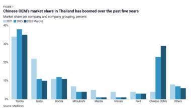
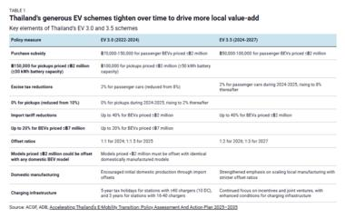
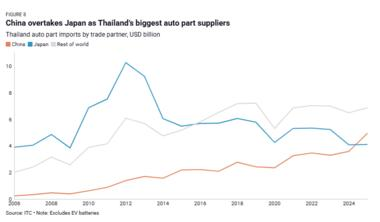
一句话核心
靠零关税的自贸协定 + 泰国自己的电动车补贴计划，中国车企五年内从"查无此车"干到泰国近 30% 市场份额、纯电市场 89%，但也把当地传统车企和 11 万工人挤到了裁员边缘。
背景与关键数据
荣鼎集团（Rhodium Group，知名研究机构）的报告，三张图：
- 图1（post9_img1）：泰国各车企市场份额（2021 vs 2025 vs 2026年5月至今）。日系传统巨头丰田（约 34%→33%）、五十铃、本田都在下滑；Chinese OEMs（中国车企）从约 5% 暴涨到约 28%——一根柱子拔地而起。
- 图2（post9_img2）：泰国电动车激励政策对比表，EV 3.0（2022–2024）升级到 EV 3.5（2024–2027）。逐项列了购车补贴、消费税减免、进口关税减免（BEV 最高减 40%）、本地生产抵消要求、充电基建等——政策一代比一代更强调"拉动本地化生产"。
- 图3（post9_img3）："中国超越日本成为泰国最大汽车零部件供应国"。泰国汽车零部件进口按来源国（十亿美元），中国（橙线）持续攀升并超过日本（蓝线）。数据源 ITC（不含电池）。
图片解读
- 图1一眼看懂"谁在崛起、谁在退潮"：中国车企那根柱子从矮到高的三段对比，配上丰田等日系的缓慢下滑，就是一幅"改朝换代"的图。
- 图2是"为什么能崛起"的政策答案——泰国用真金白银的补贴 + 对中国车零关税，人为地给了中国电动车巨大成本优势。
- 图3是"崛起的深度"：不只是卖整车，连零部件供应链都被中国取代了日本的位置，说明中国车企在泰国是"连根扎下"，不是简单倾销。
为什么重要 / 对市场和经济的含义
这条是帖1、帖7逻辑的现实落地——中国如何用供应链 + 产业政策 + 价格战，把一个海外市场"整条吃下"：
- 对中国车企：泰国是东盟最大汽车市场和区域生产枢纽，拿下泰国等于拿到了辐射整个东南亚的跳板。零关税 + 本地建厂，是绕开欧美关税壁垒的经典打法。
- 对泰国：短期消费者受益（车便宜了、价格两年降了 20%+），但代价是本土及日系产业链受冲击，NESDC 估计 11 万工人（占汽车业 16.3%）面临被淘汰——泰国汽车行业团体已经发警告信。这是"引进外资 vs 保护本土就业"的经典两难。
- 对全球：这是中国"新三样"（电动车、锂电池、光伏）出海的缩影。它也预示了未来的贸易摩擦点——当中国产能横扫某个市场、挤出当地就业时，贸易保护主义的反弹几乎是必然的（欧洲已经加了关税，泰国的警告信是下一个信号）。
延伸知识
- 什么是"原产地规则"与自贸协定套利：自贸协定给成员国零/低关税，但要求商品达到一定"本地增加值"才算原产。中国车企在泰国建厂做本地组装，既享受泰中自贸的零关税，又满足泰国 EV 计划的本地化要求——一举两得。理解这点，就懂为什么"建厂"是出海的关键动作，而不只是出口整车。
- "产业挤出效应"：外来高效竞争者进入，会挤垮本土效率较低的产业和就业。经济学上这是"创造性破坏"的一部分（长期提升效率），但短期的失业阵痛是真实的政治问题。泰国 11 万工人的风险，就是这个抽象概念的具体人肉代价——也是为什么各国对中国产能又爱（便宜）又怕（抢饭碗）。
今日全图索引
| 帖号 | 时间 | 主题 | 标签 | 图片文件名 |
|---|---|---|---|---|
| 1 | 14:41 | NBER 论文：中国的"元素周期表特权"（关键矿产供应链定价权） | #论文或书籍推荐 | post1_img1.jpg |
| 2 | 14:05 | CNBC/高盛：黄金是客户命中率最高的多头品种 | #金融 | post2_img1.jpg |
| 3 | 14:02 | BofA：美国低收入者支出更猛，减税预扣是推手 | #其他国家经济 | post3_img1.jpg |
| 4 | 13:55 | 美国战略石油储备(SPR)降至 1983 年来最低 | #金融 | post4_img1.jpg |
| 5 | 13:54 | 何亚福：韩国出生人口回升的主因分析 | #其他国家经济 | post5_img1.jpg |
| 6 | 13:48 | 麦肯锡：2025 全球家庭财富 570 万亿美元（股票驱动） | #金融 | post6_img1.jpg ~ post6_img4.jpg |
| 7 | 13:34 | TKL：中国储蓄"超级大国"，收紧外流连攻带守 | #金融 | post7_img1.jpg、post7_img2.jpg |
| 8 | 13:29 | zerohedge：特朗普暂停伊朗轰炸，红海油价逼近百元 | #其他国家经济 | post8_img1.jpg ~ post8_img3.jpg |
| 9 | 13:24 | 荣鼎：中国电动车横扫泰国（近30%份额、纯电89%） | #经济数据 | post9_img1.jpg ~ post9_img3.jpg |
本报告由自动化每日跟读任务生成。图片为知识星球原图，均已本地保存于
jason_images/2026-07-25/并内嵌于本文件。内容仅供学习参考，不构成任何投资建议。